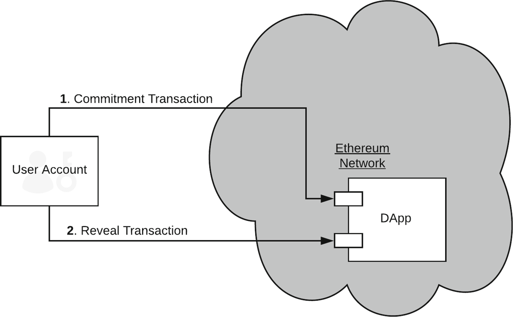
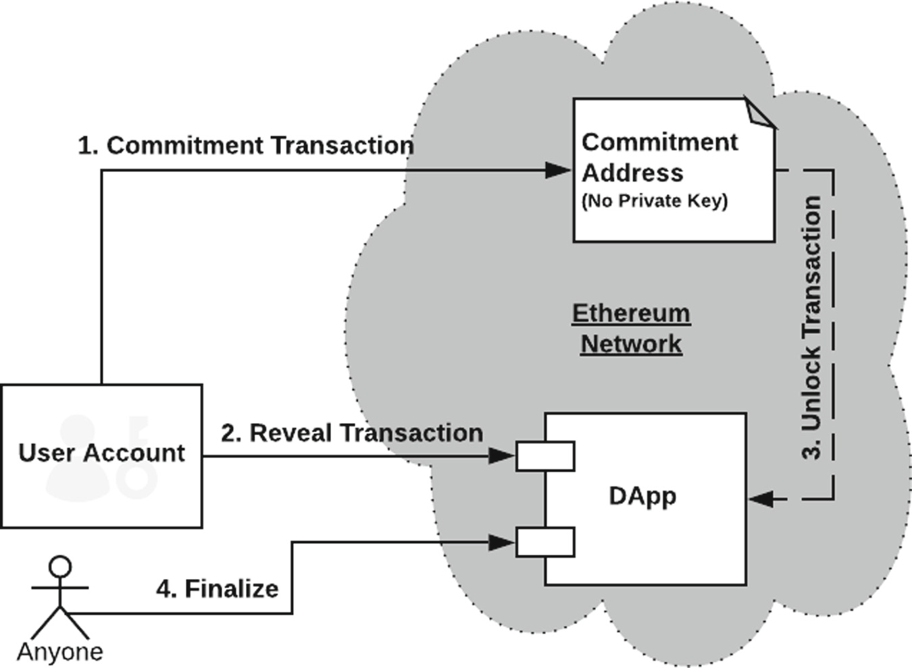

区块链常见的攻击手段
Front-Running Attacks
提前攻击定义
提前攻击是，当恶意节点观察到一个交易传播之后，但是在完成之前，尝试让自己的交易确认在观察到的交易之前或者替代观察到的交易。
传统的提前攻击
主要分为两类
（1）地面交易者偷听到经纪人和他的客户就大额交易的协商之后，超过经纪人提前购买，当大额购买导致暂时减少股票供应时可能会获利。
（2）或者，恶意的经纪人可能会在收到客户的购买指令和实际执行购买期间，通过购买自己的股票来抢占自己客户的订单。（类似的技术可以应用在大额交易）。
Front-Running attack、insider trading and arbitrage
Front-Running attack 提前攻击：有人观察到一个具体的交易被设置为执行并在实际执行之前对其作出反应。
Insider trading 内幕攻击：如果此人可以访问通常的特权信息，这些信息可以用来预测未来的交易，但是不会对实际的未决定的交易作出反应，就认为这种攻击是内幕攻击
arbitrage 套利攻击：如果此人在交易完成之后，或者信息是公开的时候作出反应。并且以很快的反应获利，这被认为是套利。
A Taxonomy of Front-Running Attacks
我们将他分为三类：替换、插入和压制攻击。
对于三类攻击，Alice 尝试去调用处于特定状态的智能合约上的函数，Mallory尝试在Alice调用在相同状态下的智能合约上的她自己的函数。
替换攻击 displacement attack：对攻击者来说，Alice的函数调用运行在Mallory之后并不重要。Alice的函数可以成为孤儿的，或者是没有任何含义的。替换的例子包括：Alice试图注册一个域名，Mallory先注册它[35]；Alice试图提交一个bug以获得赏金，Mallory窃取并首先提交[16]；Alice试图在拍卖中提交出价，然后Mallory复制它。
插入攻击 insertion attack，在Mallory运行她的函数之后，智能合约的状态改变并且她需要Alice原始的函数运行在这个修改后的状态。举个例子，如果Alice以高于最佳报价的价格向区块链资产下订单，Mallory将插入两个交易：她将以最佳报价购买，然后以Alice稍高的购买价格提供相同的资产出售。如果Alice在随后执行，Mallory将从价差中获利，而不必持有资产。
压制攻击，suppression attack，在Mallory运行她的函数之后，她试图延迟Alice运行她的函数。在延迟之后，她对Alice的功能是否运行无所谓。
这些攻击都有两个变量，异步和散装
Cases of Front-Running in DApps(decentral applications)
Markets and Exchanges
Crypto-Collectibles Games
Gambling GAS Auction
Name Services
Cases of Front-Running in ICOs
初始代币发售
Key Mitigations
分为三类
（1）区块链移除旷工随意改变交易顺序或者强制排序的能力
（2）密码学技术来限制交易的能见度，给潜在的提前攻击很少的信息
（3）DApps自下而上的设计来移除他们的操作中交易顺序和时间的重要性。
Transaction Sequencing
FIFO在分布式的网络中是不太可能的，
矿工倾向于优先打包高汽油费和或者高nonce的交易
Canonical Transaction Ordering Rule (CTOR)，词典顺序排序，适用于比特币，但是不适用于以太坊
Confidentiality
现在的一个保护隐私的研究方向就是DApps。
DApp交互包括以下组件
（1）DApp的代码，（2）DApp的当前状态，（3）被调用的函数的名称，（4）提供给该函数的参数，（5）该函数的合约地址 （6）发送者的身份。
应用于DApp的机密性可能意味着对每一项的不同保护级别。 对于前端运行，函数调用（3,4）是最重要的，但是，可以从状态更改（2）推断出函数调用。 Hawk [38]和Ekiden [21]是（2，3，4）机密性的示例（有局限性，我们正在讨论）。
传统的预防提前攻击的方法，dark pool
Commit/Reveal

Commit and Reveal. User sends a commitment transaction with the hash of the data, After the commitment period is over, user sends her reveal transaction to the DApp revealing the information that matches the commitment
Commit/Reveal 是一个 two-round protocol，如果在第一轮的时候被抛弃的话将会成为一个很大的问题。举个例子，在金融交易中其他交易顺序是在可预测的间隔里的，攻击者通过观察可以标记具有多个已经提交的交易的序列（价格-时间优先排序），不执行交易。他们只会揭开那些对他们有利的交易。 最后，我们注意到任何多轮协议都将带来可用性挑战：用户必须意识到，参与第一轮不足以完成其意图。
Enhanced Commit/Reveal**

Fig. 7. Submarine Send [18]. User generates an Unlock transaction from which the commitment address is retrieved using ECDSA ECRecover. 1. by funding the commitment address, user is committed to the transaction. 2. User sends the reveal transaction to the DApp, revealing the nature of the commitment transaction. 3. She broadcasts the unlock transaction to unlock the funds in the commitment address. 4. After the “Auction” is over, anyone can call Finalize function to finalize the process.
这个协议增加了一个commitment address，为commitment address提供资金，用户承诺了交易。
Reentrancy
重入攻击
Reentrancy on a single function
THE DAO攻击
第一种bug是指涉及在第一个函数调用完成之前，可以重复调用此函数。
// INSECURE
mapping (address => uint) private userBalances;
function withdrawBalance() public {
uint amountToWithdraw = userBalances[msg.sender];
(bool success, ) = msg.sender.call.value(amountToWithdraw)(""); // At this point, the caller's code is executed, and can call withdrawBalance again
require(success);
userBalances[msg.sender] = 0;
}因为直到函数的最后之前，用户的余额都没有置为0，后续的函数调用依旧是成功的，并且一遍又一遍的在退还余额。
在这个给定的例子中，最好去防止这种攻击的方法是确保直到你完成你需要做的内部事务之前，不要去调用一个外部的函数。
mapping (address => uint) private userBalances;
function withdrawBalance() public {
uint amountToWithdraw = userBalances[msg.sender];
userBalances[msg.sender] = 0;
(bool success, ) = msg.sender.call.value(amountToWithdraw)(""); // The user's balance is already 0, so future invocations won't withdraw anything
require(success);
}Cross-function Reentrancy
交叉函数重入攻击
攻击者可以使用不同的共享同样状态的函数来做同样的攻击。
// INSECURE
mapping (address => uint) private userBalances;
function transfer(address to, uint amount) {
if (userBalances[msg.sender] >= amount) {
userBalances[to] += amount;
userBalances[msg.sender] -= amount;
}
}
function withdrawBalance() public {
uint amountToWithdraw = userBalances[msg.sender];
(bool success, ) = msg.sender.call.value(amountToWithdraw)(""); // At this point, the caller's code is executed, and can call transfer()
require(success);
userBalances[msg.sender] = 0;
}在这种情况下，攻击者在withdrawBalance中的外部调用上执行其代码时，将调用transfer（）。 由于其余额尚未设置为0，因此即使他们已经收到提款，他们也可以转移代币。 DAO攻击中也使用了此漏洞。
相同的解决方案将起作用，并具有相同的警告。 另请注意，在此示例中，两个功能都是同一合约的一部分。 但是，如果多个合约共享状态，则可能会在多个合约中发生同一错误。
Pitfalls in Reentrancy Solutions
重入攻击解决方案中的陷阱
因此重入攻击可以发生在多个交叉函数，甚至多个合约之中，解决单个函数的方法难以奏效。
相反，我们建议您先完成所有内部工作（即状态更改），然后再调用外部函数。 如果仔细遵守此规则，将可以避免由于重新进入而引起的漏洞。 但是，您不仅需要避免过早地调用外部函数，还需要避免调用会调用外部函数的函数。 例如，以下内容是不安全的：
// INSECURE
mapping (address => uint) private userBalances;
mapping (address => bool) private claimedBonus;
mapping (address => uint) private rewardsForA;
function withdrawReward(address recipient) public {
uint amountToWithdraw = rewardsForA[recipient];
rewardsForA[recipient] = 0;
(bool success, ) = recipient.call.value(amountToWithdraw)("");
require(success);
}
function getFirstWithdrawalBonus(address recipient) public {
require(!claimedBonus[recipient]); // Each recipient should only be able to claim the bonus once
rewardsForA[recipient] += 100;
withdrawReward(recipient); // At this point, the caller will be able to execute getFirstWithdrawalBonus again.
claimedBonus[recipient] = true;
}mapping (address => uint) private userBalances;
mapping (address => bool) private claimedBonus;
mapping (address => uint) private rewardsForA;
function untrustedWithdrawReward(address recipient) public {
uint amountToWithdraw = rewardsForA[recipient];
rewardsForA[recipient] = 0;
(bool success, ) = recipient.call.value(amountToWithdraw)("");
require(success);
}
function untrustedGetFirstWithdrawalBonus(address recipient) public {
require(!claimedBonus[recipient]); // Each recipient should only be able to claim the bonus once
claimedBonus[recipient] = true;
rewardsForA[recipient] += 100;
untrustedWithdrawReward(recipient); // claimedBonus has been set to true, so reentry is impossible
}另外一个方法是 mutex（互斥），这使您可以“锁定”某些状态，因此只能由锁的所有者更改。 一个简单的例子可能看起来像
// Note: This is a rudimentary example, and mutexes are particularly useful where there is substantial logic and/or shared state
mapping (address => uint) private balances;
bool private lockBalances;
function deposit() payable public returns (bool) {
require(!lockBalances);
lockBalances = true;
balances[msg.sender] += msg.value;
lockBalances = false;
return true;
}
function withdraw(uint amount) payable public returns (bool) {
require(!lockBalances && amount > 0 && balances[msg.sender] >= amount);
lockBalances = true;
(bool success, ) = msg.sender.call(amount)("");
if (success) { // Normally insecure, but the mutex saves it
balances[msg.sender] -= amount;
}
lockBalances = false;
return true;
}互斥锁
DoS with (Unexpected) revert
具有意外还原的拒绝服务攻击
// INSECURE
contract Auction {
address currentLeader;
uint highestBid;
function bid() payable {
require(msg.value > highestBid);
require(currentLeader.send(highestBid)); // Refund the old leader, if it fails then revert
currentLeader = msg.sender;
highestBid = msg.value;
}
}如果攻击者使用具有回退所有付款功能的后备功能的智能合约出价，则攻击者可以赢得任何拍卖。 当它尝试退款给旧的领导者时，如果退款失败，它将还原。 这意味着恶意的竞标者可以成为领导者，同时确保对他们地址的任何退款都将始终失败。 这样，它们可以防止其他任何人调用bid（）函数，并永远保持领导者地位。 如前所述，建议改为建立预付款系统。
另一个示例是合同可以遍历数组以向用户（例如，众筹合同中的支持者）付款的情况。 通常要确保每次付款都能成功。 如果没有，应该还原。 问题是，如果一个呼叫失败，您将还原整个支付系统，这意味着循环将永远无法完成。 没有人得到报酬，因为一个地址强迫发生错误。
address[] private refundAddresses;
mapping (address => uint) public refunds;
// bad
function refundAll() public {
for(uint x; x < refundAddresses.length; x++) { // arbitrary length iteration based on how many addresses participated
require(refundAddresses[x].send(refunds[refundAddresses[x]])) // doubly bad, now a single failure on send will hold up all funds
}
}DoS with Block Gas Limit
区块汽油费限制的拒绝服务攻击
每个模块在花费的汽油费以及可完成的汽油费上都有一个上限。 这就是区块汽油费限制。 如果花费的汽油费超过此限制，则交易将失败。 这导致了两种可能的拒绝服务媒介：
Gas Limit DoS on a Contract via Unbounded Operations
即使没有故意攻击，这也可能导致问题。 但是，如果攻击者可以操纵所需的汽油费，那就尤其糟糕。 在前面的示例中，攻击者可以添加一堆地址，每个地址都需要获得非常小的退款。 因此，退还每个攻击者地址的汽油成本最终可能超过气体限制，从而完全阻止了退款交易的发生。
Gas Limit DoS on the Network via Block Stuffing
即使您的合同不包含无限循环，攻击者也可以通过放置具有足够高的汽油费的计算密集型交易，来阻止其他交易包含在区块链的多个区块中。
为此，攻击者可以发出多个交易，这些交易将消耗整个瓦斯限额，并在开采下一个区块后立即包含足够高的瓦斯价格。 没有汽油价格可以保证将其包含在区块中，但是价格越高，机会就越大。
如果攻击成功，则该块中将不包含其他任何事务。 有时，攻击者的目标是在特定时间之前阻止特定合同的交易。
该攻击是在赌博应用Fomo3D上进行的。 该应用程序旨在奖励最后购买“钥匙”的地址。 每次购买钥匙都会延长计时器的时间，一旦计时器变为0，游戏便结束了。攻击者购买了一把钥匙，然后连续塞满13个区块，直到触发计时器并释放了支出。 攻击者在每个区块上发送的交易占用了790万个gas，因此该gas限制允许进行一些小的“发送”交易（每个交易具有21,000个gas），但是不允许对buyKey（）函数的任何调用（花费300,000+ gas）。
可以在需要在特定时间段内采取行动的任何合同上使用“块填充”攻击。 但是，与任何攻击一样，它只有在预期的回报超过其成本时才有利可图。 这种攻击的成本与需要填充的块数成正比。 如果可以通过阻止其他参与者采取行动来获得丰厚的回报，那么这种攻击很可能会将您的合同作为攻击目标。
Insufficient gas griefing
汽油费不足
接受通用数据并使用它通过低级address.call（）函数调用另一个合约（“子调用”）的合约可能会发生这种攻击，这在多重签名和交易中继智能合约
如果调用失败，则合同有两个选择：
1.恢复整个交易
2.继续执行。
以简化中继器合同的以下示例为例，无论子调用的结果如何，该合同都将继续执行：
contract Relayer {
mapping (bytes => bool) executed;
function relay(bytes _data) public {
// replay protection; do not call the same transaction twice
require(executed[_data] == 0, "Duplicate call");
executed[_data] = true;
innerContract.call(bytes4(keccak256("execute(bytes)")), _data);
}
}该合同允许交易中继。 想要进行交易但无法自己执行交易的人（例如，由于缺乏以太坊支付汽油费）可以签署他想通过的数据，并在任何介质上以其签名传输数据。 然后，第三方“转发者”可以代表用户将该交易提交给网络。
如果仅给定适量的气体，则中继器将完成执行，将_dataargument记录在已执行的映射中，但是子调用将失败，因为它收到的汽油费不足以完成执行。_
攻击者可以使用它来检查事务，通过向它们发送少量汽油费来使它们失败。 这种攻击是“griefing”的一种形式：它不会直接使攻击者受益，反而会给受害者带来伤害。 如果他们是第一个将其提交给Relayer的人，那么一个愿意持续消耗少量汽油费的专门攻击者理论上可以以此方式审查所有交易。 解决此问题的一种方法是实施要求转发器提供足够的气体以完成子呼叫的逻辑。 如果矿工试图在这种情况下进行攻击，则require语句将失败，内部调用将恢复。 用户可以指定最小gasLimit以及其他数据（在此示例中，通常_gasLimit值将通过签名进行验证，但在这种情况下为简单起见将其省略）。
// contract called by Relayer
contract Executor {
function execute(bytes _data, uint _gasLimit) {
require(gasleft() >= _gasLimit);
...
}
}另外一个解决的办法是只允许信任的用户来中继交易
Forcibly Sending Ether to a Contract
强制向合同发送以太币
引用：https://consensys.github.io/smart-contract-best-practices/known_attacks/